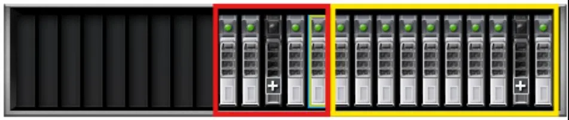
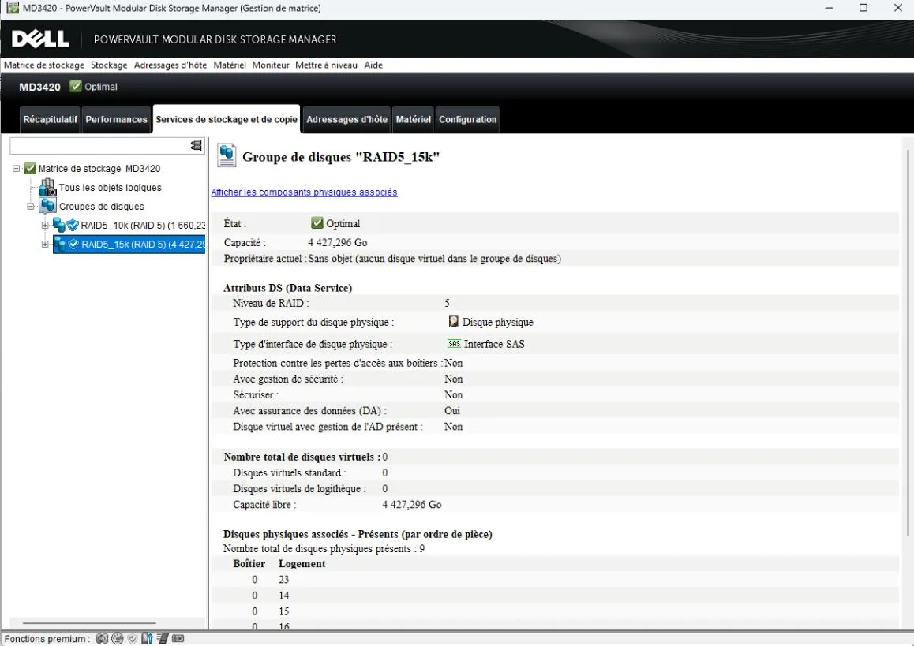

Cluster Proxmox avec baie SAN
PPE de 1re année, 2025-2026, en groupe de 4
Deux serveurs Proxmox VE réunis en cluster, avec un stockage partagé en RAID 5 sur une baie SAN Dell et des accès redondants grâce au multipath.
C1 C4 C5
Les projets réalisés en BTS SIO dans le cadre des PPE (projets personnalisés encadrés). Chaque fiche suit le même plan, du contexte jusqu'à mon bilan personnel.
PPE de 1re année, 2025-2026, en groupe de 4
Deux serveurs Proxmox VE réunis en cluster, avec un stockage partagé en RAID 5 sur une baie SAN Dell et des accès redondants grâce au multipath.
C1 C4 C5
PPE de 2e année, 2026-2027, seul
La conception et le développement de ce site, en HTML, CSS et JavaScript sans framework, puis sa mise en ligne sur GitHub Pages.
C3 C4 C6
Aucun projet PPE ne mobilise cette compétence pour l'instant. Elle est illustrée sur la page Stages.
PPE de 1re année, 2025-2026
Ce projet a été réalisé en 1re année, en groupe de quatre avec Tristan Dos Santos, Muhamed-Ali Unlu et Hamza Doumi. Le besoin était de monter une infrastructure de virtualisation sur du vrai matériel : deux serveurs capables d'héberger des machines virtuelles, avec un stockage commun pour les données.
Environnement technique :
Contraintes : le matériel avait déjà servi. La baie contenait encore d'anciennes configurations RAID et un ancien groupe d'hôtes qu'il fallait supprimer. Le temps du PPE était aussi limité.
La finalité : avoir une infrastructure prête à accueillir des machines virtuelles, qui continue de fonctionner si un disque ou un lien tombe en panne.
J'ai installé les deux serveurs, les deux switchs et la baie SAN dans la baie informatique. J'ai ensuite branché les alimentations, relié les serveurs aux switchs et à la baie SAN, puis rangé les câbles avec un système de cable management.
J'ai téléchargé l'image ISO officielle de Proxmox VE et créé une clé USB de démarrage avec Rufus. Sur chaque serveur, j'ai démarré sur la clé depuis le BIOS/UEFI, puis j'ai suivi l'installation graphique : choix du disque système, mot de passe root, nom du serveur et configuration réseau. Après le redémarrage, l'administration se fait depuis l'interface web sur le port 8006. J'ai terminé par les mises à jour :
# Accès à l'interface web d'administration
https://<adresse-du-serveur>:8006
# Mise à jour du système
apt update && apt full-upgradeLe cluster a été créé sur le premier serveur, puis le second serveur l'a rejoint. La commande pvecm status permet de vérifier que les deux serveurs font bien partie du cluster.
# Sur le premier serveur : création du cluster
pvecm create <nom-du-cluster>
# Sur le second serveur : ajout au cluster
pvecm add <adresse-du-premier-serveur>
# Vérification de l'état du cluster
pvecm statusLa baie se configure avec le logiciel Dell PowerVault Modular Disk Storage Manager, installé sur un poste d'administration relié au port de management de la baie. Nous avons supprimé les anciennes configurations, puis créé deux groupes de disques en RAID 5 : un groupe de 5 disques à 10 000 tours par minute et un groupe de 10 disques à 15 000 tours par minute. Le RAID 5 permet de perdre un disque sans perdre de données.


Nous avons ensuite créé un disque virtuel, puis un groupe d'hôtes contenant les deux serveurs Proxmox, et nous lui avons affecté le LUN 10. Chaque serveur est relié à la baie par deux liens actifs.
Comme chaque serveur voit la baie par deux chemins, il voit aussi le même disque deux fois. Le multipath regroupe ces chemins en un seul périphérique : si un lien tombe, l'autre prend le relais. Les identifiants des disques (WWID) sont masqués ci-dessous.
# Installation de l'outil
apt update
apt install multipath-tools
# Récupération de l'identifiant (WWID) de chaque disque de la baie
/lib/udev/scsi_id -g -u -d /dev/sda
/lib/udev/scsi_id -g -u -d /dev/sdd
# Ajout des deux disques au multipath
multipath -a <WWID-du-volume-10K>
multipath -a <WWID-du-volume-15K>Dans le fichier /etc/multipath.conf, on donne un nom simple à chaque volume :
multipaths {
multipath {
wwid "<WWID-du-volume-10K>"
alias mpath10
}
multipath {
wwid "<WWID-du-volume-15K>"
alias mpath15
}
}On recharge la configuration, on vérifie les chemins, puis on crée les volumes LVM sur les deux périphériques multipath :
# Rechargement de la configuration et vérification des chemins
multipath -r
multipath -ll
# Création des volumes physiques et des groupes de volumes LVM
pvcreate /dev/mapper/mpath10
vgcreate mpath10vg /dev/mapper/mpath10
pvcreate /dev/mapper/mpath15
vgcreate mpath15vg /dev/mapper/mpath15
# Vérification
pvscan --cachepvecm status, multipath -ll, pvscan).Les machines virtuelles n'ont pas pu être déployées pendant le projet, faute de temps. L'infrastructure est prête à les accueillir.
Ce qui a marché : l'installation physique et l'installation de Proxmox se sont bien passées, et à la fin du projet le cluster et le stockage partagé fonctionnaient.
Ce qui n'a pas marché : nous n'avons pas eu le temps de créer les machines virtuelles, alors que c'était le but final de l'infrastructure.
Nous avons rencontré plusieurs difficultés, que nous avons réglées une par une :
Ce que j'ai appris : installer un hyperviseur sur un serveur physique, câbler une infrastructure complète, et comprendre comment un cluster, une baie SAN, le RAID 5 et le multipath travaillent ensemble. J'ai aussi appris à documenter chaque étape pour que quelqu'un d'autre puisse refaire l'installation.